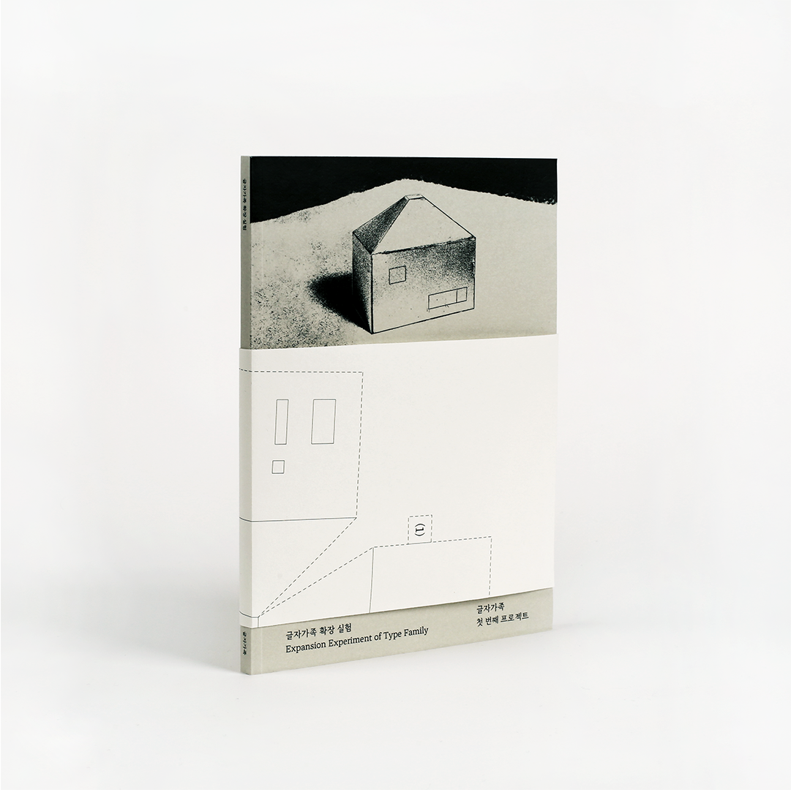
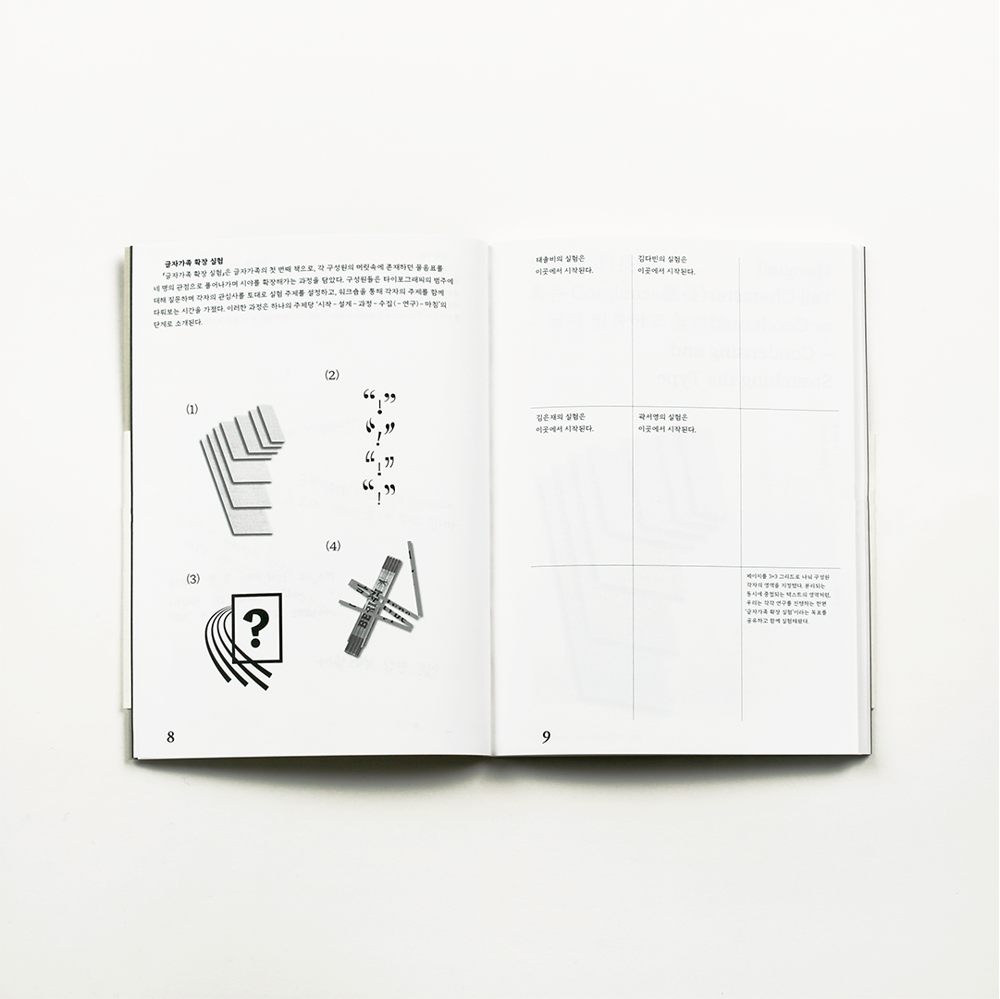
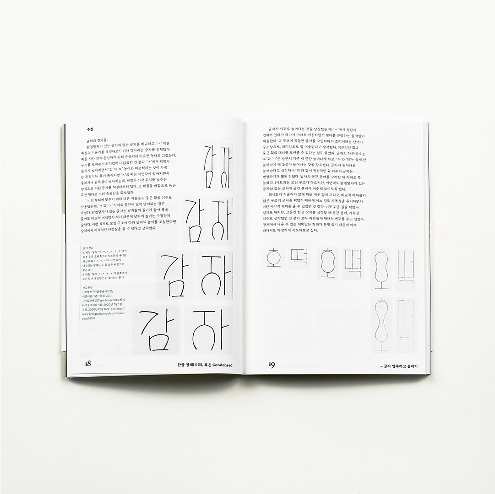
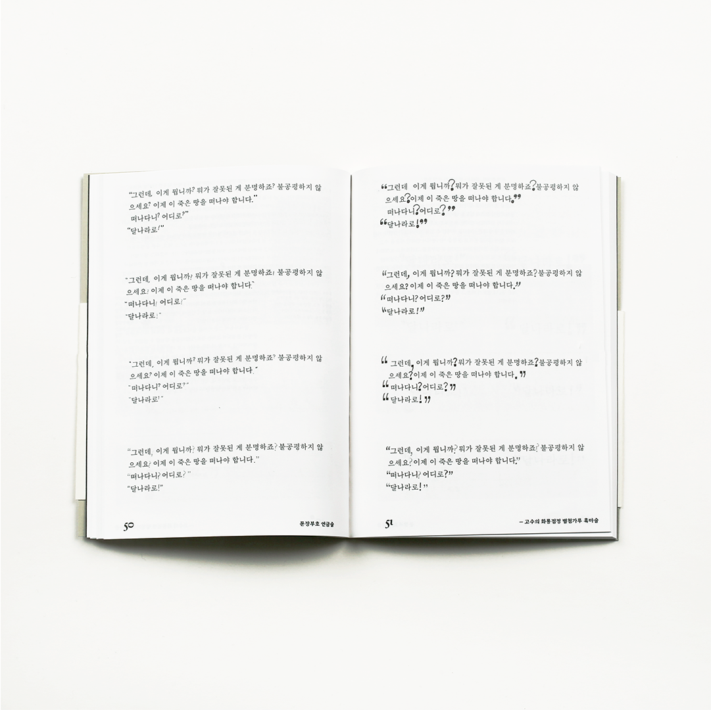
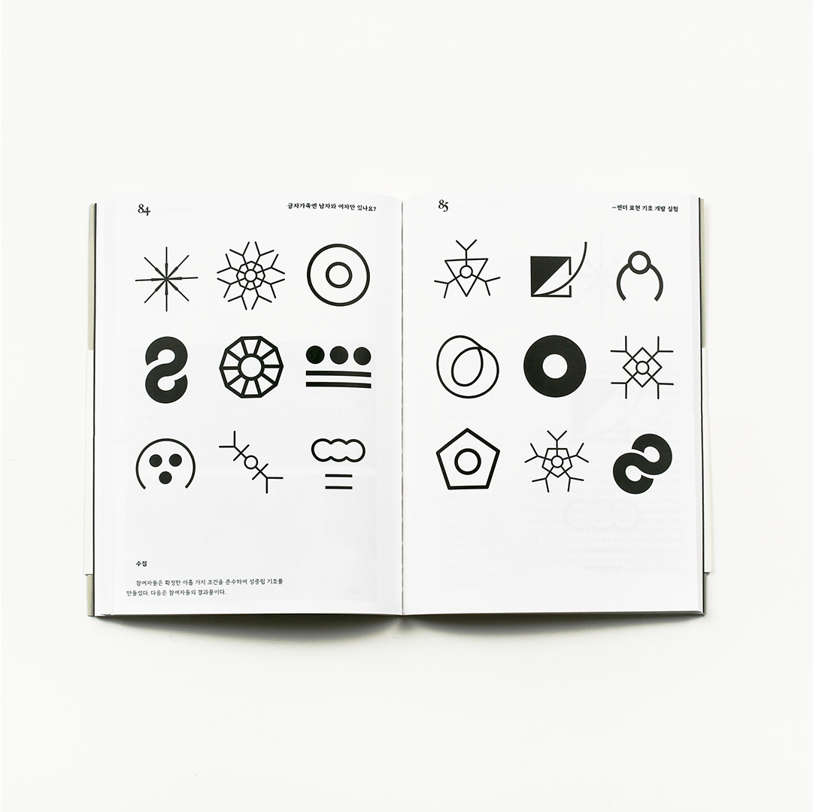
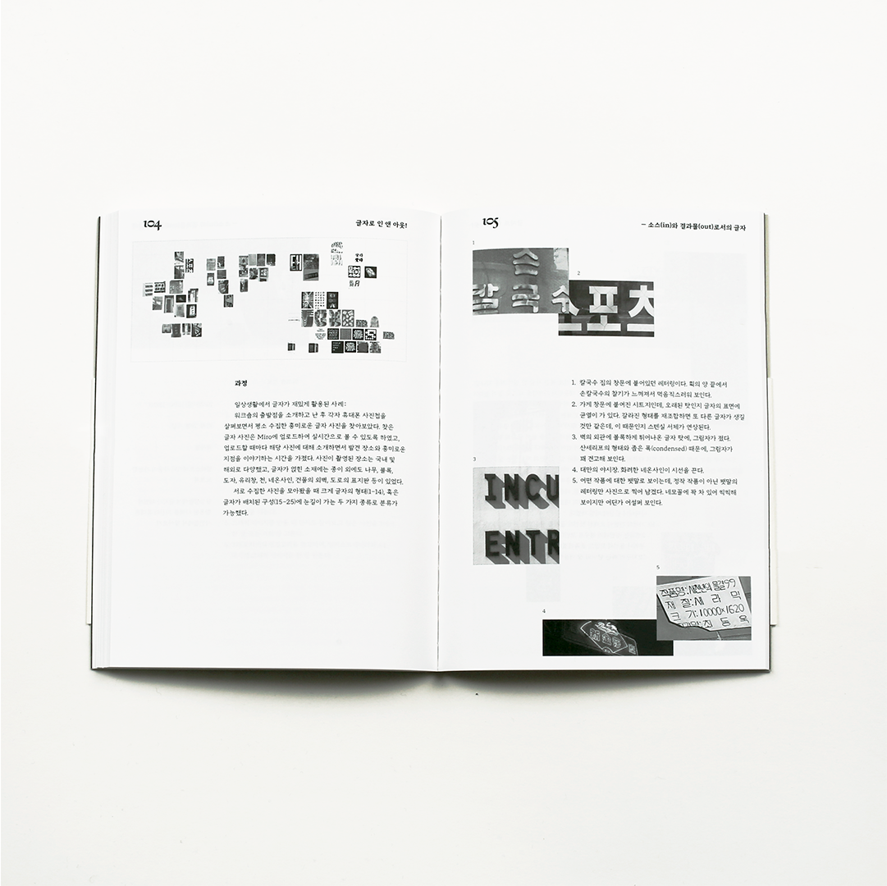
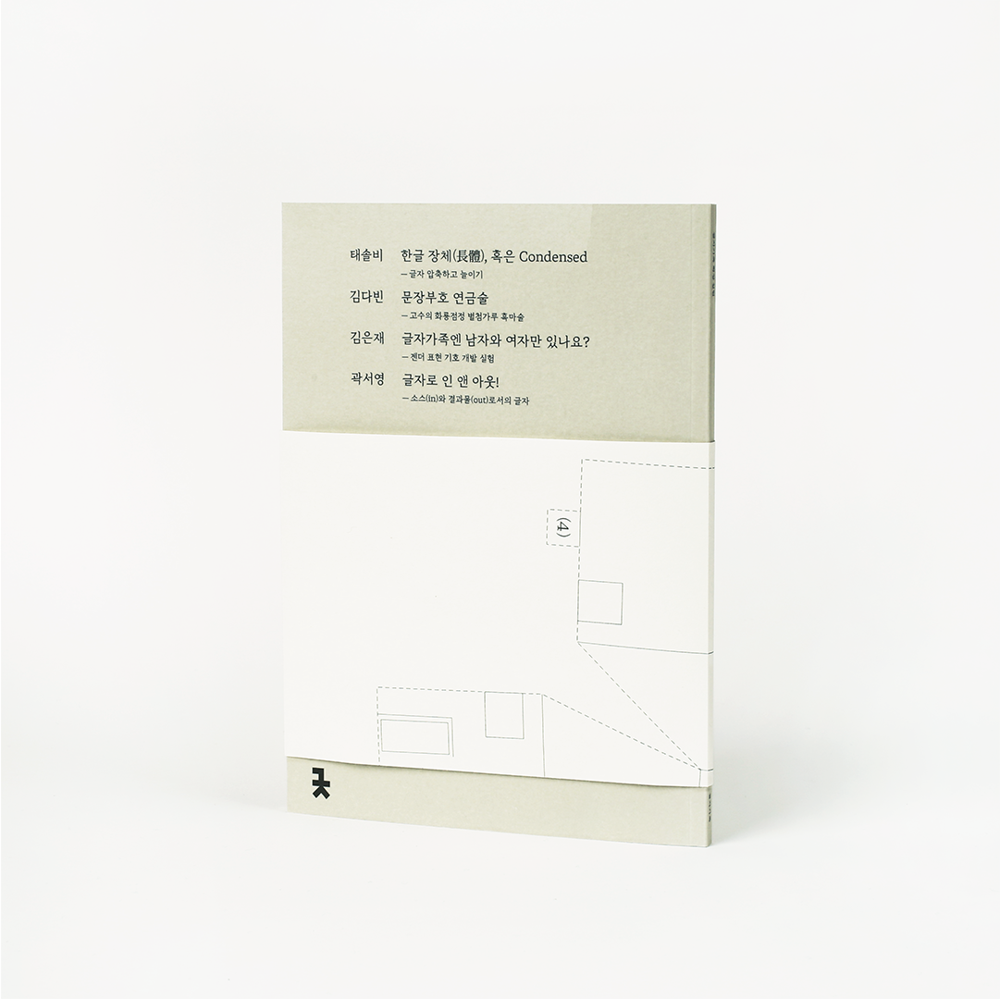

Dabin Kim 多彬 - Typography ↔ Print + Digital ---
Dabin Kim 多彬 - Typography ↔ Print + Digital --- Dabin Kim 多彬 - Typography ↔ Print + Digital ---
Dabin Kim 多彬 - Typography ↔ Print + Digital ---
Dabin KimPrintWebInfo ••••••••••••••••••••••••••••••••••••••••••••••••••••••••••••••••••••••• Dabin Kim is Typography Apprentice.
Tries to explore the boundary of visual language, work in and out between digital and tangible surface. Studying Visual Communication Design at Hongik University, Korea.
Expansion Experiment of Type Family, book, 2021.
— Team Typegajok (Seoyoung Gwak, Dabin Kim, Eunjae Kim, Solbee Tae)







글자가족의 첫 번째 책인 ‘글자가족 확장 실험’은 각 구성원의 머릿속에 존재하던 물음표를 네 명의 관점으로 풀어나가며 시야를 확장해가는 과정을 담았다. 구성원들은 타이포그래피의 범주에 대해 질문하며 각자의 관심사를 토대로 실험 주제를 설정하고, 워크숍을 통해 각자의 주제를 함께 고민해보았다.
각자 구성원들의 주제를 설명하는 책의 네가지 소제목은 다음과 같다: <한글 장체(薞鐎), 혹은 Condensed — 글자 압축하고 늘이기>, <문장부호 연금술 —고수의 화룡점정 별첨가루 흑마술>, <글자가족엔 남자와 여자만 있나요? — 젠더 표현 기호 개발 실험>, <글자로 인 앤 아웃! — 소스(in)와 결과물(out)로서의 글자>
The first book of the Typegajok "Expansion Experiment of Type Family," contains the process of expanding the view by solving the question mark that existed in each member's head. The members asked questions about the boundaries of typography, set up experimental topics based on their interests, and investigated about their topics together through workshops.
The four chapter of the book explaining the theme of each member shall be as follows:
＜Hanguel Tall Character (長體) or Condensed — Compressing and Stretching Type＞,
＜Punctuation Alchemy — Master's special seasoned finishing touch black magic＞,
＜Is there only male or female in type family? — An experiment of developing a gender symbol＞,
＜In and Out through letters! — Letters as source and output＞.